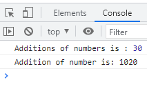

We can convert any string type to integer use parseInt() Method.
Note: You can see the output in Console.
without parseInt() method you can check the result in console. because whenever you assign the value in the double quote it will decide string value of the variable and output will be 1020.(addition of two value but one is number and another is string it means not addition it will combine the both value.
